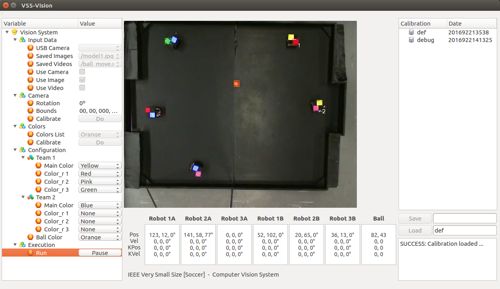
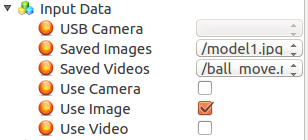
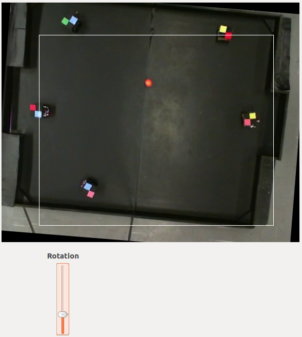
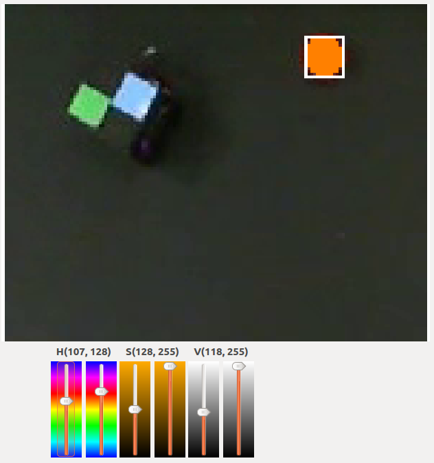
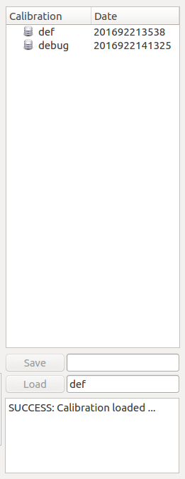
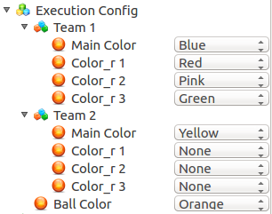
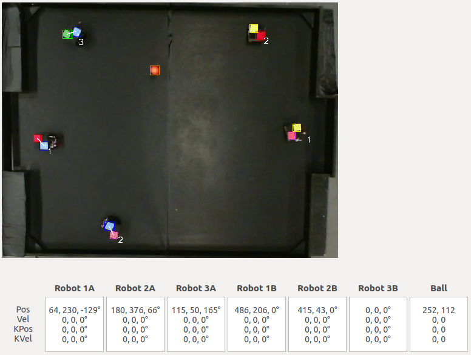
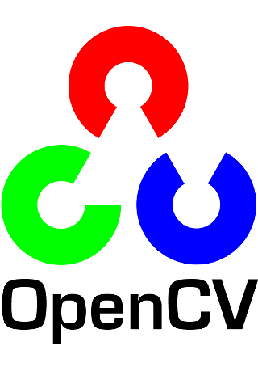

Entenda como funciona a comunicação entre os projetos
Como é realizado a comunicação entre os softwares
O VSS-Vision é um sistema de visão computacional construído em cima do SO Linux e feito para o rastreamento de objetos, especialmente robôs e uma bola golfe para a categoria de futebol de robôs IEEE Very Small Size [Soccer]. O projeto se inspira no SSL-Vision, sistema de visão computacional padrão da categoria de futebol de robôs Small Size League.
Aqui encontra-se o funcionamento do programa, isto é, como escolher uma câmera, calibrar uma cor, calibrar o campo, salvar e carregar uma calibragem, definir as cores de cada time e iniciar o rastreamento.
Nessa seção é escolhido a entrada de dados do sistema, ou seja, as imagens que iram alimentar o algoritmo de visão computacional. Existem três opções: Camera, Imagem salva e Video Salvo. Como pode ser visto na figura abaixo.
O sistema automáticamente reconhece qualquer camera USB conectada em qualquer distro Linux, caso não haja nenhuma camera o mesmo desabilita a opção de escolha. O mesmo funciona para as imagens salvas e videos salvos, o programa procura imagens no diretório VSS-Vision/src/images e videos em VSS-Vision/src/videos.
O sistema possibilita a calibragem de uma rotação em Z e dois pontos de corte. Para calibrar o ponto de cima é necessário clicar com o botão esquerdo do mouse e o ponto de baixo é necessário clicar com o botão direito. Um exemplo de calibragem pode ser visto abaixo.
O sistema possibilita a calibragem de 8 cores, Laranja, Amarelo, Azul, Vermelho, Verde, Rosa, Roxo, Marrom. Após o usuário escolher uma cor para calibrar o mesmo deve encontrar um intervalo de cor, no espaço de cores HSV, que represente-a. Ao clicar na tela com o botão esquerdo o sistema da um zoom na área para ajuste fino. Um exemplo de calibragem pode ser visto abaixo.
Para facilitar o desenvolvimento foi implementado um Banco de Dados para guardar calibragens. Para salvar uma nova calibragem, basta entrar com um nome no campo ao lado do botão Save e clicar no mesmo. Para carregar uma calibragem feita anteriormente, basta entrar com o nome da mesma no campo ao lado do botão Load e clicar no mesmo.
Nessa seção é escolhido a configuração de cores dos times, ou seja, as cores primarias: Azul e Amarelo, e as cores secundárias de cada robôs, se existente. Os intervalos de cores HSV utilizados no rastreamento são os mesmos definidos na seção de Calibragem de Cores. Um exemplo de configuração pode ser visto abaixo.
Após selecionar uma entrada de dados e definido a configuração dos times, o rastreamento dos objetos em campo pode ser iniciado. Um exemplo de funcionamento pode ser visto abaixo.
Aqui encontra-se alguns aspectos técnicos sobre o funcionamento do sistema de visão computacional, como, as bibliotecas utilizadas e o motivo de utiliza-las.
A biblioteca OpenCV (Open Source Computer Vision Library) é um biblioteca de visão computacional e aprendizado de máquina. O OpenCV foi construído para prover uma infraestrutura comum para aplicações de visão compucational e acelerar o uso the percepção de máquina em produtos comerciais. A biblioteca possui mais de 2500 algoritmos otimizados, que incluem um conjunto de algoritmos clássicos e do estado arte de visão computacional e aprendizado de máquina. O projeto utiliza a biblioteca para aplicar o rastreamento baseado em blobs, reduzir os ruídos, otimizar o processamento e no futuro predizer posições utilizando Filtro de Kalman.
O VSS-Vision envia o estado de jogo via sockets, para isso é utilizado a biblioteca Google Procol Buffers (Protobuf) para serializar e deserializar as mensagens, pois dentre todas as opções existentes a mesma apresenta um dos melhores desempenhos e pode ser utilizada em diversas linguagens. A biblioteca é neutra em linguagem e neutra em plataforma, como XML, porém menor, mais rapido e simples.
Para enviar os dados o sistema abre um envio multicast na porta 5555, para isso, é utilizado a biblioteca ZeroMQ. A biblioteca também busca ser neutra em linguagem e plataforma, assim o sistema de visão e todos os outros projetos estão aptos a rodar em múltiplos computadores com SOs diferentes. É possivel desenvolver um módulo de inteligência que se comunique com os projetos do VSS-SDK nas seguintes linguagens: C++, Java, Python, JavaScript, Go, Ruby, Objective-C, C#, Perl, PHP, Scala e Julia.
O SQLite é uma biblioteca que implementa um banco de dados embarcado de alta-confiabilidade e que não necessita de muitas configurações para funcionar. Inicialmente o projeto está utilizando-a para salvar os intervalos de cores.

É utilizado a biblioteca Qt (Versão 5) para construir a interface gráfica. Qt é conhecido por ser um framework funcional em diversas linguagens e que funciona em diversos sistemas operacionais, como: Linux, Windows, Android, iOS e WinRT.
Como é realizado a comunicação entre os softwares
Como utilizar o VSS-Viewer obtém os dados de ambos os projetos
Como o VSS-SampleStrategy pode facilitar o desenvolvimento de um estratégia
Quais as semelhanças entre os projetos